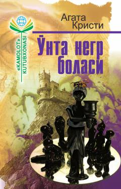

ЎНXilvat orolda sirli tarzda tuzoqqa tushgan o'nta odamning fojiali taqdiri haqidagi mashhur detektiv asar.
Ushbu mashhur detektiv romanida bir-biriga mutlaqo aloqador bo'lmagan o'nta odam sirli taklifnoma bilan xilvat ороldagi uyga yig'iladi. Biroq ko'p o'tmay ular sirli qotilning tuzog'iga tushib qolgani va har biri bolalar saноq she'riga mos ravishda birin-ketin halok bo'layotgani ma'lum bo'ladi. Dunyodan ajralgan bu qo'rqinchli o'yindan qochib qutulishning imosi yo'q.